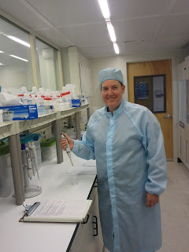
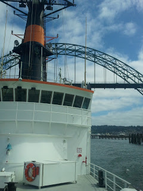
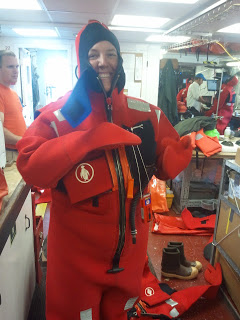
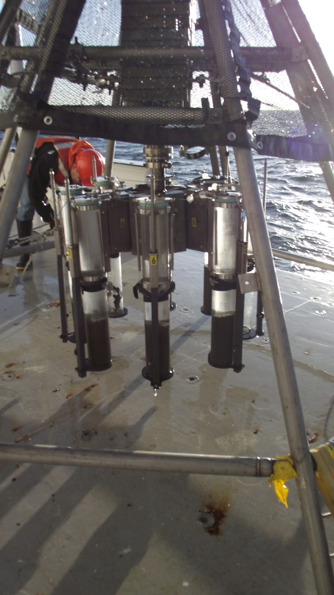
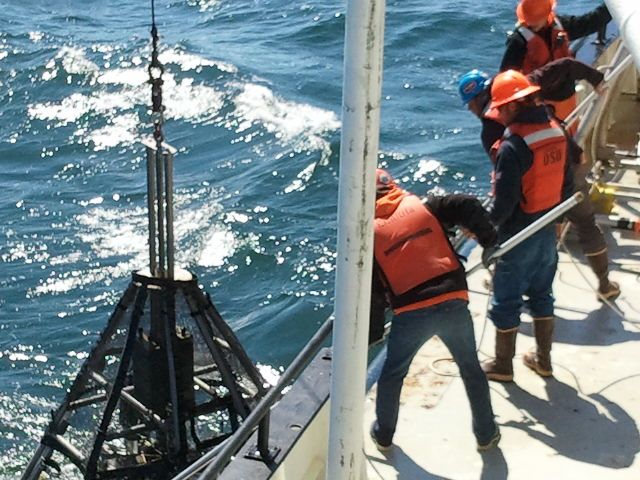
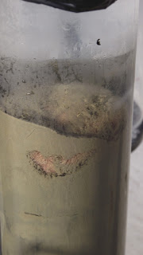
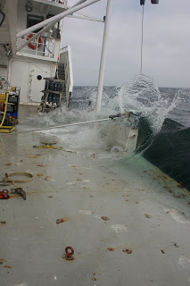
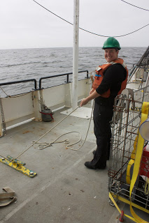
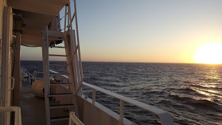
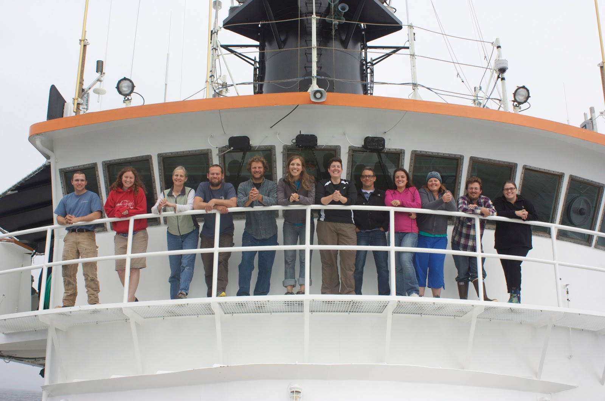

Internship Summer of 2013
In the summer of 2013, I went to Corvallis, OR to live on campus at Oregon State University. I spent three months doing an internship in the marine science department. The internship consisted of lab work, and field work. The highlight for me was doing a ten day research cruise aboard the Oceanus.
Clean Room Lab
Here I am pictured in the clean room lab. Everytime I would need to work in this lab it was mandatory to not wear your street shoes and wear a special lab coat and hat. The goal is not introduce any outside germs into the lab area.
Research Vessel Deployment
I spent ten days aboard the Oceanus off the Pacific coast. The ship docks in Newport, OR, and from there we went to many different locations to collect samples.
Before we left, we needed to make sure everyone knew safety protocol. Below I am pictured in an immersion suit. Luckily, we did not need to use these on our trip!
Research Apparatus
To conduct our research we deployed a piece of equipment over the side of the ship to the ocean floor.
Each tube collected a core of ocean sediments from the ocean floor. Each deployment was a big deal and we needed all hands on deck to help. Once we had the samples on board, we had different lab rooms to properly process and store the samples until we got back to OSU.
Sometime we even "caught" ocean life in the tubes!
All good things come to an end!
Overall, I feel incredibly lucky to have been a part of this field work experience. I learned a lot from my mentors, Jim and April about how to collect good data and also how to maintain a level of attention to details in an environment that is always working against you. It is definitely an experience I would repeat. Here are just a few more of my favorite shots from the ship!
   